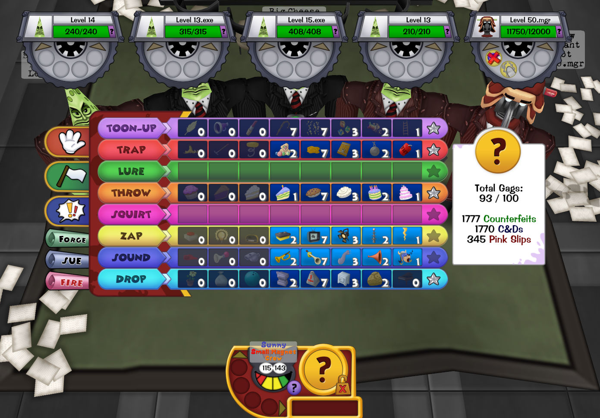

One of Corporate Clash's new Manager boss Cogs that arrived with v1.3, and probably one of the most infamous ones, known for being extremely tricky and difficult to figure out. The Chainsaw Consultant's battle includes several puzzle elements tied in with a R.E.V. system (like chainsaw revving!) that the player must control and keep an eye on. With enough knowledge, the player can learn how to manipulate the battle the way they want it to go. But with enough reckless play, it's easy to fall to this boss fight. This fight took about eight hours total over the session of one very long meeting to design, and countless hours in testing to ensure all scenarios played out the way we wanted them to.
An in-game screenshot of the fight.

An image of the Chainsaw Consultant using one of his signature abilities, Revving Up, which allows him to use gained Rev points to do certain abilities.
If you're interested to see the entire fight, you can view this video which has a live blind reaction/first clear when the boss finally hit the live servers for players to go up against!